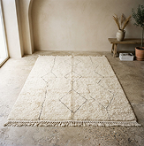
Tapis Itri
Laine naturelle · 160 × 230 cm
2 400 MAD · indicatif
Tissage
À Aït Ourir, des femmes tissent un avenir commun.
Marrakech-Safi · Aït Ourir
Créée en 2014 · 24 membres
Portrait de démonstration, à valider avec le collectif.
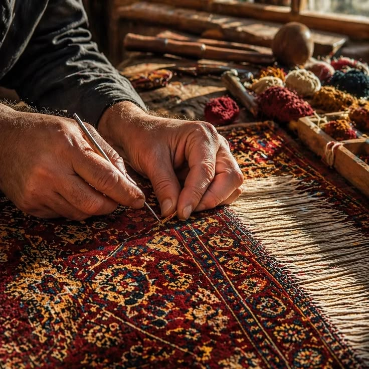
Un atelier, plusieurs voix
En 2014, douze tisseuses d’Aït Ourir décident de réunir leurs métiers et leurs savoirs. Tazrout naît de cette envie : travailler ensemble, mieux faire connaître leurs pièces et transmettre les gestes appris au sein des familles.
Aujourd’hui, le collectif rassemble 24 membres. Chaque tapis garde la trace de celle qui l’a tissé, tout en s’inscrivant dans une palette commune. La laine naturelle, les rythmes du métier et la discussion autour des motifs donnent à l’atelier son caractère.
« Notre travail voyage, tout en gardant notre voix. »
Amina El Idrissi · tisseuse chez Tazrout · citation illustrative
Au plus près des gestes
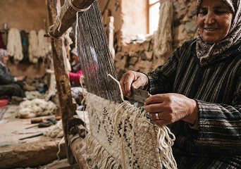
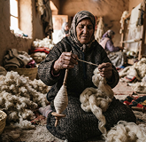
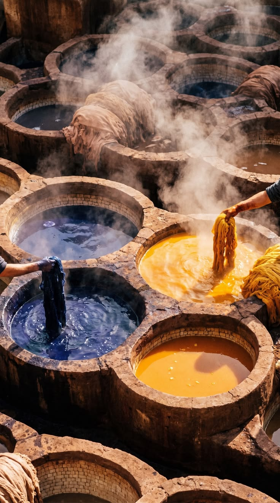
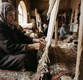
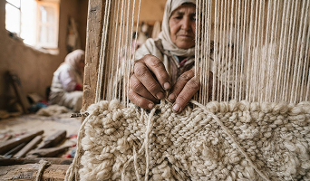
Filer, teindre, tisser, nouer : six regards sur un même savoir-faire.
Une sélection de pièces
Prix indicatifs en dirhams marocains (MAD), hors livraison. Dimensions, disponibilités et devis à confirmer directement auprès de Tazrout. Aucun achat sur ce site.

Laine naturelle · 160 × 230 cm
2 400 MAD · indicatif
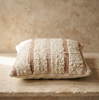
Laine & coton · 45 × 45 cm
320 MAD · indicatif
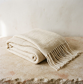
Laine de mouton · 130 × 180 cm
780 MAD · indicatif
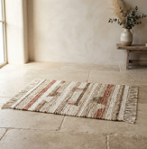
Laine naturelle · 60 × 100 cm
650 MAD · indicatif
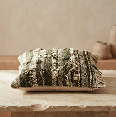
Coton tissé · 50 × 50 cm
260 MAD · indicatif
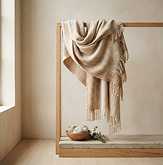
Laine fine · 70 × 200 cm
480 MAD · indicatif
De la fibre à la pièce
Quatre étapes, une attention continue. Le travail à la main rend chaque pièce singulière.
Choisir la laine
La fibre est triée, lavée puis filée pour conserver sa souplesse.
Choisir la laine
La fibre est triée, lavée puis filée pour conserver sa souplesse.
Choisir la laine
La fibre est triée, lavée puis filée pour conserver sa souplesse.
Choisir la laine
La fibre est triée, lavée puis filée pour conserver sa souplesse.
Atelier Tazrout, quartier des ateliers, Aït Ourir, Marrakech-Safi, Maroc.
Du lundi au vendredi · 9 h–17 h. Visites uniquement sur rendez-vous.
Interlocutrice : Amina El Idrissi
tazrout@cooperatives.example ↗+212 5 55 34 16 38 · numéro fictif
Contacter la coopérative ↗︎
Adresse et coordonnées de démonstration. À valider avant toute prise de contact.